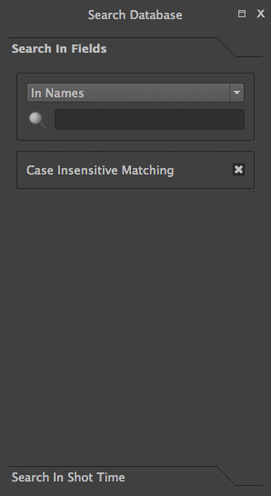
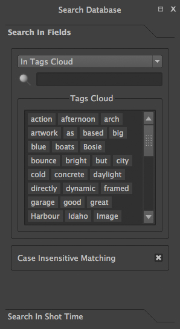

Manual – Help File
Table Of Content
Introduction
sIBL_GUI is an open source lighting assistant making the
Image Based Lighting process easier and straight forward
through the use of sIbl files ( “.Ibl” ).
What is sIBL? It’s a short for “Smart
IBL”, a standard describing all informations and files
needed to provide a fast and easy Image Based Lighting Setup in
the 3d package of your choice.
More detailed informations are available here:
http://www.smartibl.com
Features
Why an external application instead of directly using
scripting possibilities of the 3d package itself? There are
advantages and issues with both methods.
With an external application, “.Ibl” files
format parsing, Collections management and database inspection
are handled by that application, you write that framework once
and then you can reuse it for other 3d packages.
The bridge between sIBL_GUI and the 3d package is done
through Templates that output simple loader scripts.
That’s one of sIBL_GUI strength: It only took a few
hours to convert the
XSI Mental Ray Template into a Maya
Mental Ray one.
Scripting a native tool with a good interface offering
same functionalities as sIBL_GUI would have taken days if not
weeks.
sIBL_GUI is built in Python:
http://www.python.org/.
Nokia Qt Ui Framework:
http://qt.nokia.com/ is used
for the Interface thanks to PyQt bindings:
http://www.riverbankcomputing.co.uk/
and SQLAlchemy:
http://www.sqlalchemy.org/
provides the database backbone.
Some highlights:
- Components Framework.
- Configurable Ui Layout.
- SQlite Database.
- Online Updater.
- Microsoft Bing Maps Gps map.
- Internal Image Previewer.
and much more …
Additional informations about sIBL_GUI are available into
this development thread:
sIBL_GUI Thread
The source code is available on
github:
http://github.com/KelSolaar
Installation
Installation on Windows is pretty straightforward, just
launch “sIBL_GUI.exe”.
Download “sIBL_GUI.dmg”. Open it and drag
“sIBL_GUI.app” into the “Application”
directory.
sIBL_GUI 3 is currently not built on Linux because of
several issues. You can however grab the source code at
Github.com:
http://github.com/KelSolaar/sIBL_GUI
and launch sIBL_GUI.py file from a shell.
You will need those dependencies:
Usage
User Preferences
sIBL_GUI preferences are stored per user in their home
directory:
- C:\Users\$USER\AppData\Roaming\HDRLabs\sIBL_GUI on
Windows 7
- C:\Documents and Settings\$USER\Application
Data\HDRLabs\sIBL_GUI on Windows XP
- /Users/$USER/Library/Preferences/HDRLabs/sIBL_GUI on
Mac Os X
- /home/$USER/.HDRLabs/sIBL_GUI on Linux
The typical sIBL_GUI preferences directory structure is the
following:
Structure Description:
-
Templates: Directory storing user
Templates ( This directory is scanned by sIBL_GUI when
importing default Templates ).
-
settings: Directory storing sIBL_GUI
settings file.
-
logging: Directory storing sIBL_GUI
logging file.
-
io: Directory used for sIBL_GUI input /
output operations.
-
remote: Directory used by the Online
Updater component when it downloads online files.
-
loaderScripts: Directory used as
output directory by the Loader Script component.
-
database: Directory storing the SQLite
database.
-
backup: Directory used by the Database
Backup component when it backups the database.
-
components: Directory storing user
components.
Command Line Parameters
sIBL_GUI accepts various command line parameters:
-
-h, —help: Display the command line
parameters help message and exit. ( Mac Os X and Linux only
)
-
-a, —about: Display application
“About” message. ( Mac Os X and Linux only
)
-
-v
VERBOSITYLEVEL,
—verbose=VERBOSITYLEVEL: Application
verbosity levels: 0 = Critical | 1 = Error | 2 = Warning |
3 = Info | 4 = Debug.
-
-f
LOGGINGFORMATER,
—loggingFormatter=LOGGINGFORMATER:
Application Logging Formatter: 'Default, Extended,
Standard’.
-
-u
USERAPPLICATIONDATASDIRECTORY,
—userApplicationDatasDirectory=USERAPPLICATIONDATASDIRECTORY:
User application datas directory ( Preferences directory
).
-
-t, —deactivateWorkerThreads: The
Worker Threads are deactivated.
-
-d
DATABASEDIRECTORY,
—databaseDirectory=DATABASEDIRECTORY:
Database directory.
-
-r, —databaseReadOnly: Database is
read only, database write access methods are not exposed
into the interface.
-
-o
LOADERSCRIPTSOUTPUTDIRECTORY,
—loaderScriptsOutputDirectory=LOADERSCRIPTSOUTPUTDIRECTORY:
Loader scripts output directory.
-
-s, —hideSplashScreen: The
SplashScreen is not displayed during application
startup.
Note: On Mac Os X, sIBL_GUI is launched from command line
doing the following: “cd” into
“sIBL_GUI.app” directory and enter
“./Contents/MacOS/sIBL_GUI” followed by the
parameters.
Shared Database
Configuration
If you want to share the same Database between multiple
installed versions of sIBL_GUI there are 2 solutions:
Dirty Method
Copy the Database file
sIBL_Database.sqlite on every machine that
have sIBL_GUI installed.
The file is located in one of those directory depending your
OS:
-
C:\Users\$USER\AppData\Roaming\HDRLabs\sIBL_GUI\database\
on Windows 7
- C:\Documents and Settings\$USER\Application
Data\HDRLabs\sIBL_GUI\database\ on Windows XP
-
/Users/$USER/Library/Preferences/HDRLabs/sIBL_GUI/database/
on Mac Os X
- /home/$USER/.HDRLabs/sIBL_GUI/database/ on Linux
Recommended Method
It’s possible to share one Database file between
multiple sIBL_GUI install. In order to do that you need to
start sIBL_GUI with some command line parameters:
-
-d
DATABASEDIRECTORY,
—databaseDirectory=DATABASEDIRECTORY: This
one is mandatory for what you want to do, it will tell
sIBL_GUI to store / use the database on the provided
path.
-
-r, —databaseReadOnly: This one is
optional, but
HIGHLY recommended: It will hide
/ unexpose from the UI all methods that can write to the
Database. That’s something important because the last
thing you want is someone screwing the whole database by
doing a mistake.
Example Command Line:
C:\HDRLabs\sIBL_GUI\sIBL_GUI.exe -d
“Z:/sIBL_Database/” -r
When the Database is read only, the automatic scanner adding
new Ibl Sets is deactivated meaning that newly Ibl Sets dropped
into your library directory won’t be added
automatically.
It’s a good idea to put the Database with a real file
system write lock in case someone launch a sIBL_GUI instance
without the command line arguments.
That way you can have artists using the Database a
supervisor has defined, and even using different Databases
depending on their current production.
Ibl Sets Wizard
The first time sIBL_GUI is started a wizard asks to add Ibl
Sets into the database:
Choose a directory where are stored some Ibl Sets and they
will be added to the Default Sets Collection.
Interface
sIBL_GUI interface is customizable and comes with 3 main
layouts directly available from the main toolbar:
Interactions:
Right clic: raises a context menu with the Ui
Widgets list:
Central Widget icon: Shows / hides the
Database Browser component widget Ui.
Layouts icon: Raises a context menu where the
user can store / restore up to 5 custom layouts and recall them
whenever needed:
Miscellaneous icon: Raises a context menu with
some links and miscellaneous functionalities:
Library Layout
The Library layout is where most of the Ibl Sets management
is done.
This layout is built around 4 components:
Inspect Layout
The Inspect layout is where Ibl Set inspection is done.
This layout is built around 3 components:
Export Layout
The Export layout is where the bridge between sIBL_GUI and
the 3d packages is created.
This layout is built around 4 components:
An additional but extremely powerful export related
component is available by right clicking the main toolbar:
Preferences Layout
The Preferences layout is where sIBL_GUI behavior is
configured.
This layout is built around 2 components:
Components
sIBL_GUI has currently 2 categories of components:
-
Default Component ( Components without an
associated Ui Widget ).
-
Ui Component ( Components with an
associated Ui Widget ).
Those 2 types are split into 3 main families:
-
Core ( Factory required components, not
deactivable and not removable )
-
Addons ( Factory optional components,
deactivable and removable )
-
User ( User optional components,
deactivable and removable )
Core
Collections Outliner (
core.collectionsOutliner )
The Collections Outliner component is where the Ibl Sets are
organized into Collections for better management. There is a
Default Collection where Ibl Sets fall when they are added
without a specific Collection container.
Interactions:
-
Double clic: Edits Collection name or
comment.
-
Right clic: Displays a context menu
described further.
-
Drag’n’drop:
- Drag’n’dropping an Ibl Sets selection
from the Database Browser component to a Collections
Outliner component Collection change sets current
Collection.
- Drag’n’dropping some Ibl Sets files or
directories from the Os will raise a message box asking
confirmation for their addition into the database.
Columns Descriptions:
-
Collections: Collections names ( Editable
through double click ).
-
Sets: Sets count per Collections.
-
Comments: Collections comments ( Editable
through double click ).
Context Menu:
-
Add Content …: Adds a new
Collection, then recursively adds chosen directory Ibl Sets
into the database, assigning them to the new
Collection.
-
Add Collection …: Adds a new
Collection to the database.
-
Remove Collection(s) ...: Removes selected
Collections from the database ( Overall and Default
Collections cannot be removed ).
Note:
While adding a new Collection, a comment can be directly
provided by using a comma separated name and comment.
***
Components Manager (
core.componentsManagerUi )
The Components Manager component allows sIBL_GUI addons and
user components activation / deactivation ( Core components are
required and not deactivable ). Selected components details are
displayed in the bottom
Components Informations widget.
Interactions:
-
Right clic: Displays a context menu
described further.
Columns Descriptions:
-
Components: Components names ( Components
are sorted by families ).
-
Activated: Components activations
status.
-
Categorie: Components categories ( Default
or Ui ).
-
Rank: Components ranks ( Components with a
low rank will have a high instantiation priority ).
Context Menu:
-
Activate Component(s): Activates selected
component(s).
-
Dectivate Component(s): Deactivates
selected component(s).
-
Reload Component(s): Reloads selected
component(s) ( Deactivates the component, reloads component
code, activates back the component ).
Addons Functionalities:
-
Open Component(s) Location(s) ...: Opens
component(s) directory(s).
***
Database Browser (
core.databaseBrowser )
The Database Browser component is the central component
where Ibl Sets are viewed and chosen for export. The component
is tracking the Ibl Sets files on the disk and reload them
automatically when modified.
Interactions:
-
Double clic: Edits selected Ibl Set
title.
-
Right clic: Displays a context menu
described further.
-
Drag’n’drop:
- Drag’n’dropping an Ibl Sets selection
from the Database Browser component to a Collections
Outliner component Collection change the selected sets
Collection.
- Drag’n’dropping some Ibl Sets files or
directories from the Os will raise a message box asking
confirmation for their addition into the database.
-
Hovering: Hovering an Ibl Set raises a
popup with informations about the focused Ibl Set.
-
Thumbnails Size Horizontal Slider: Adjusts
Ibl Sets icons size.
Context Menu:
-
Add Content …: Recursively adds
chosen directory Ibl Sets into the database assigning them
to the selected Collections Outliner component Collection
or the Default Collection if none is selected.
-
Add Ibl Set …: Adds the selected Ibl
Set file into the database assigning it to the selected
Collections Outliner component Collection or the Default
Collection if none is selected.
-
Remove Ibl Set(s) ...: Removes selected
Ibl Sets from the database.
-
Update Ibl Set(s) Location(s) ...: Updates
selected Ibl Sets files paths.
Addons Functionalities:
-
Edit In sIBLedit …: Sends selected
Ibl Sets to sIBLedit.
-
Edit In Text Editor …: Edits
selected Ibl Sets with system or custom user defined text
editor.
-
Open Ibl Set(s) Location(s) ...: Opens
selected Ibl Sets directories.
-
View Background Image …: Views
selected Ibl Sets background images in either the Internal
Image Previewer or the application defined in the Preview
component preferences.
-
View Lighting Image …: Views
selected Ibls Set lighting images in either the Internal
Image Previewer or the application defined in the Preview
component preferences.
-
View Reflection Image …: Views
selected Ibls Set reflection images in either the Internal
Image Previewer or the application defined in the Preview
component preferences.
-
View Plates …: Views selected Ibls
Set plates images in either the Internal Image Previewer or
the application defined in the Preview component
preferences.
***
Db (
core.db )
The Db component is the heart of sIBL_GUI datas storage, it
provides the database manipulation, read, write and rotating
backup methods.
***
Inspector ( core.inspector )
The Database Browser component allows Ibl Set
inspection.
Interactions:
-
Right clic: Displays a context menu
described further.
-
Hovering: Hovering Inspector Ibl Set
raises a popup with informations about the Inspector Ibl
Set.
-
Previous Ibl Set Push Button: Navigates to
previous Ibl Set in the current selected Collection.
-
Next Ibl Set Push Button: Navigates to
next Ibl Set in the current selected Collection.
-
Previous Plate Push Button: Navigates to
previous Inspector Ibl Set plate.
-
Next Plate Push Button: Navigates to next
Inspector Ibl Set plate.
Addons Functionalities:
-
View Background Image Push Button: Views
Inspector Ibl Set background image in either the Internal
Image Previewer or the application defined in the Preview
component preferences.
-
View Lighting Image Push Button: Views
Inspector Ibl Set lighting image in either the Internal
Image Previewer or the application defined in the Preview
component preferences.
-
View Reflection Image Push Button: Views
Inspector Ibl Set reflection image in either the Internal
Image Previewer or the application defined in the Preview
component preferences.
-
View Plates Push Button: Views Inspector
Ibl Set plates images in either the Internal Image
Previewer or the application defined in the Preview
component preferences.
Context Menu:
Addons Functionalities:
-
Edit In sIBLedit …: Sends Inspector
Ibl Set to sIBLedit.
-
Edit In Text Editor …: Edits
Inspector Ibl Set with system or custom user defined text
editor.
-
Open Ibl Set(s) Location(s) ...: Opens
Inspector Ibl Sets directory.
-
View Background Image …: Views the
Inspector Ibl Set background image in either the Internal
Image Previewer or the application defined in the Preview
component preferences.
-
View Lighting Image …: Views the
Inspector Ibl Set lighting image in either the Internal
Image Previewer or the application defined in the Preview
component preferences.
-
View Reflection Image …: Views the
Inspector Ibl Set reflection image in either the Internal
Image Previewer or the application defined in the Preview
component preferences.
-
View Plates …: Views the Ibl Set
Inspector plates images in either the Internal Image
Previewer or the application defined in the Preview
component preferences.
***
Preferences Manager (
core.preferencesManager )
The Preferences Manager component is used to configure
sIBL_GUI behavior. There are 2 pages where settings can be
changed:
-
General: Overall sIBL_GUI settings.
-
Others: Components settings.
General Page:
-
Logging Formatter: Adjust sIBL_GUI logging
formatter:
- Default: Default logging formatter:
Logging Level: Message.
- Extended: Extended logging formatter:
Time – Thread – Logging Level:
Message.
- Standard: Simple standard logging formatter:
Message.
-
Verbose Level: Adjust sIBL_GUI verbose
level between different modes ( Debug being the most
verbosing, Critical the less ):
- Debug
- Info
- Warning
- Error
- Critical
-
Restore Geometry On Layout Change:
sIBL_GUI window size and position will be restored when
switching layouts.
Others Page:
Those settings are components dependent and will be
described per related component.
***
Templates Outliner (
core.templatesOutliner )
The Templates Outliner component is where Templates are
organized and reviewed. Selected Templates details are
displayed in the bottom
Templates Informations widget. The component is
tracking the Templates files on the disk and reload them
automatically when modified.
Templates are sorted into 2 main categories:
-
Factory ( Templates from sIBL_GUI
installation directory ).
-
User ( Templates not from sIBL_GUI
installation directory ).
In those categories, Templates are sorted by 3d
packages.
Columns Descriptions:
-
Templates: Templates names.
-
Release: Templates versions numbers.
-
Software Version: 3d packages compatible
version.
Interactions:
-
Right clic: Displays a context menu
described further.
-
Drag’n’drop:
- Drag’n’dropping some Templates files or
directories from the Os will raise a message box asking
confirmation for their addition into the database.
Context Menu:
-
Add Template …: Adds the selected
Templates file to the database.
-
Remove Templates(s) ...: Removes selected
Templates from the database.
-
Import Default Templates: sIBL_GUI will
scan for Templates into it’s installation directory
and the user preferences directories.
-
Filter Templates Versions: sIBL_GUI will
filter the Templates keeping the highest version of
multiple same Templates.
-
Display Help File(s) ...: Displays
Templates associated help files.
Addons Functionalities:
-
Edit In Text Editor …: Edits
selected Templates with system or custom user defined text
editor.
-
Open Templates(s) Location(s) ...: Opens
selected Templates directories.
Addons
About ( addons.about )
The About component displays the
About window.
***
Database Operations (
addons.databaseOperations )
The Database Operations component allows the user to launch
some database maintenance operations.
Interactions:
-
Synchronize Database Push Button: Forces
database synchronization by reparsing all registered
files.
***
Gps
Map ( addons.gpsMap )
The Gps Map component is embedding a Microsoft Bing Map into
sIBL_GUI: Selecting some Ibl Sets ( Sets with
GEO coordinates ) in the Database
Browser component will display their markers onto the Gps
Map.
Interactions:
-
Zoom In Push Button: Zooms into the Gps
Map.
-
Zoom Out Push Button: Zooms out of the Gps
Map.
-
Map Type Combo Box: Switches the Gps Map
style.
- Auto: This map type automatically chooses between
Aerial and Road mode.
- Aerial: This map type overlays satellite imagery
onto the map and highlights roads and major landmarks
to be easily identifiable amongst the satellite
images.
- Road: This map type displays vector imagery of
roads, buildings, and geography.
***
Loader Script (
addons.loaderScript )
The Loader Script component is providing the bridge between
sIBL_GUI and the 3d packages. It parses the selected Ibl Set,
extracts datas from it, and feeds the selected Template with
those datas resulting in a loader script that can be executed
by the 3d package.
Interactions:
-
Output Loader Script Push Button: Outputs
the loader script to the output directory.
-
Send To Software Push Button: Sends a
command to the 3d package that will execute the loader
script.
-
Software Port Spin Box: Communication port
of the host running the target 3d package.
-
Ip Adress Line Edit: Ip address of the
host running the target 3d package.
-
Convert To Posix Paths Check Box ( Windows Only
): Windows paths will be converted to Unix paths,
drive letters will be trimmed.
Addons Functionalities:
-
Open Output Folder Push Button: Opens the
output directory.
***
Loader Script Options
( addons.loaderScriptOptions )
The Loader Script Options component allows the user to tweak
the way the loader script will behave in the 3d package.
Templates attributes are exposed in 2 pages where they
can be adjusted:
-
Common Attributes: Common Template
attributes ( Refer to the current Template help file for
details about an attribute ).
-
Additional Attributes: Additional Template
attributes ( Refer to the current Template help file for
details about an attribute ).
***
Locations Browser (
addons.locationsBrowser )
The Locations Browser component provides browsing capability
to sIBL_GUI, adding directory browsing at various entry points
in sIBL_GUI Ui. The browsing is done either by the Os default
file browser or an user defined file browser.
Default Supported File Browsers:
-
Windows:
-
Mac Os X:
-
Linux:
- Nautilus
- Dolphin
- Konqueror
- Thunar
Interactions:
-
Custom File Browser Path Line Edit: User
defined file browser executable path.
***
Logging Notifier (
addons.loggingNotifier )
The Logging Notifier component displays logging messages in
the status bar.
***
Logging Window (
addons.loggingWindow )
The Logging Window component is available by right clicking
the main toolbar and displays sIBL_GUI verbose messages.
***
Online Updater (
addons.onlineUpdater )
The Online Updater component maintains sIBL_GUI and
it’s Templates up to date by checking HDRLabs repository
for new releases on startup or user request.
Interactions:
-
Get sIBL_GUI Push Button: Starts sIBL_GUI
download.
-
Get Lastest Templates: Starts selected
Templates download.
-
Open Repository: Opens HDRLabs
repository.
When a download starts the
Download Manager window will open:
The Online Updater component is configurable in the
Preferences Manager component:
Interactions:
-
Check For New Releases Push Button: Checks
for new releases on HDRLabs repository.
-
Check For New Releases On Startup Check
Box: sIBL_GUI will check for new releases on
startup.
-
Ignore Non Existing Templates Check Box:
sIBL_GUI will ignore non existing Template when checking
for new releases, meaning that if a Template for a new 3d
package is available, it will be ignored.
***
Preview ( addons.preview )
The Preview component provides image viewing capability to
sIBL_GUI through the use of the Internal Image Previewer or the
application defined in the Preview component preferences.
Interactions:
-
Custom Previewer Path Line Edit: User
defined Image Viewer / Editor executable path.
The Internal Image Previewer window provides basic
informations about the current Image:
Interactions:
-
Clic’n’dragging: Pans into the
Image.
-
Mouse Scrool Wheel: Zooms into the
Image.
-
Shortcut Key “+”: Zooms into
the Image.
-
Shortcut Key “-”: Zooms out of
the Image.
-
Previous Image Push Button: Navigate to
the previous image.
-
Next Image Push Button: Navigate to the
next image.
-
Zoom In Push Button: Zooms into the
Image.
-
Zoom Fit Push Button: Zooms fit the
Image.
-
Zoom Out Push Button: Zooms out of the
Image.
***
Raw Editing Utilities
( addons.rawEditingUtilities )
The Raw Editing Utilities component provides text editing
capability to sIBL_GUI, adding text edition at various entry
points in sIBL_GUI Ui. The text edition is done either by the
Os default text editor or an user defined text editor.
Default Supported Text Editors:
-
Windows:
-
Mac Os X:
-
Linux:
- Gedit
- Kwrite
- Nedit
- Mousepad
Interactions:
-
Custom Text Editor Path Line Edit: User
defined Text Editor executable path.
***
Rewiring Tool (
addons.rewiringTool )
The Rewiring Tool component is available by right clicking
the main toolbar. This component allows rewiring / remapping of
an Ibl Set file to another file of that set or an arbitrary
image. This widget is powerful because it’s possible to
dynamically generate
IBL sets and arbitrary load whatever
HDR you want and still benefit from
sIBL_GUI one click lighting setup.
Interactions:
-
Combo Boxes: The current image will be
remapped to the chosen entry.
-
Path Line Edits: The current image will be
remapped to the chosen custom image.
***
Search Database (
addons.searchDatabase )
|

|

|

|
The Search Database component enables search in the
database. There are 2 pages providing different search
options:
-
Search In Fields: Searches in database
fields.
-
Search In Shot Time: Searches in shot time
range.
Interactions:
Search In Fields Page:
-
Search Database Combo Box: Field against
which the search will be executed. There are 5 different
fields types available:
- In Names
- In Authors
- In Links
- In Locations
- In Comments
- In Tags Cloud
-
Search Database Line Edit: The string
entered will be matched in the selected database field.
Regular expressions are accepted. An autocompletion list
will raise once characters starts being typed.
-
Case Insensitive Matching Check Box: The
string matching is done case insensitively.
Search In Shot Time:
-
From Time Edit: Time range search
start.
-
To Time Edit: Time range search end.
***
Sets
Scanner ( addons.setsScanner )
The Sets Scanner component is a file scanning component that
will automatically register any new sets to the Default
Collection whenever it founds one in an already existing Ibl
Sets parent directory. This behavior can be stopped by
deactivating the component.
***
sIBLedit Utilities (
addons.sIBLeditUtilities )
The sIBLedit Utilities component provides a bridge between
sIBL_GUI and sIBLedit.
Interactions:
-
sIBLedit Executable Path Line Edit:
sIBLedit executable path.
Api
sIBL_GUI – Api:
http://kelsolaar.hdrlabs.com/sIBL_GUI/Support/Documentation/Api/index.html
Faq
A “Frequently Asked Questions” thread is
available on HDRLabs forum:
Smart Ibl Loaders – Faq
Change Log
sIBL_GUI – Change Log
About
sIBL_GUI by Thomas Mansencal – 2008 – 2011
Copyright© 2008 – 2011 – Thomas
Mansencal –
thomas.mansencal@gmail.com
This Software Is Released Under Terms Of
GNU
GPL V3 License:
http://www.gnu.org/licenses/